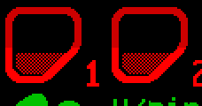
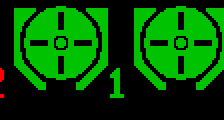
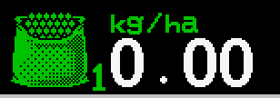
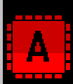

Anzeigen des Startbildschirms
Jede Anzeige des Startbildschirms mit allen ihren Zuständen — was Sie sehen, was es bedeutet, was zu tun ist.
Wo jede Anzeige sitzt, zeigt Der Startbildschirm. Diese Seite sagt, was jede einzelne bedeutet, Zustand für Zustand.
So lesen Sie jede Anzeige


Fast jede Anzeige folgt derselben Regel. Lernen Sie sie einmal, und Sie können auch eine Anzeige lesen, die Sie noch nie gesehen haben.
| Was Sie sehen | Was es bedeutet |
|---|---|
| Grünes Symbol | Normal. Das Gerät antwortet, und sein Wert liegt innerhalb der Grenzen. |
| Alarm. Das Gerät antwortet, aber der Wert hat die Grenzen verlassen. Nach der Alarmverzögerung folgt ein Alarmfenster. | |
| Keine Antwort vom Gerät. Der Wert wird als XXXX angezeigt. | |
| Das Gerät steht im Profil, aber seine Überwachung ist ausgeschaltet. Der Wert wird als !!!! angezeigt. | |
| Symbol im Wechsel mit einem roten ? | Ein Gerät der falschen Art antwortet an seiner Stelle. Der Wert wird als ???? angezeigt. |
| Keine Störung. Ein Zustand, den Sie gewählt haben oder der Ihre Aufmerksamkeit verlangt: Gerät angehoben, Spuranzeiger oben, Zündung aus, Ausbringung von Hand gesperrt. |
Geschwindigkeit

Die Fahrgeschwindigkeit in km/h. Meldungen zur Geschwindigkeit ersetzen die Zahl und blinken etwa einmal pro Sekunde, damit die Zahl lesbar bleibt.
| Was Sie sehen | Was es bedeutet |
|---|---|
| Eine Zahl in Weiß, z. B. 10.0 | Normal. |
| „LANGSAMER“ auf Rot | Sie fahren schneller als das für den Geschwindigkeitssensor eingestellte Maximum. Fahren Sie langsamer. |
| „SCHNELLER“ auf Rot | Sie fahren langsamer als das Minimum. Fahren Sie schneller. |
| XX.X in Rot | Keine Antwort vom Eingangsgerät, an dem der Geschwindigkeitssensor angeschlossen ist. |
| ???? in Rot | Ein Gerät der falschen Art antwortet anstelle des Geschwindigkeitssensors. |
| Eine gelbe Zahl im Wechsel mit „SIMULIERT“ | Die Geschwindigkeit wird aus der Einstellung des Geschwindigkeitssensors simuliert, nicht gemessen. Nichts, was von der Geschwindigkeit abhängt, ist echt. Siehe Arbeiten ohne Geschwindigkeitssensor. |
| SIMUL. ERHÖHEN / SIMUL. SENKEN | Die simulierte Geschwindigkeit selbst liegt außerhalb des zulässigen Bereichs. Ändern Sie die Einstellung, nicht die Fahrgeschwindigkeit. |
| Sensor1 / Sensor2 | Einer von zwei Geschwindigkeitssensoren ist ausgefallen. |
| „Einstellungen“ | Minimum und Maximum der Geschwindigkeit widersprechen einander. |
„LANGSAMER“ und „SCHNELLER“ sind keine Alarmfenster. Sie bleiben im Geschwindigkeitsfeld stehen, solange die Geschwindigkeit falsch ist, weil Sie sie beim Korrigieren sehen müssen. Siehe Alarme des Geschwindigkeitssensors.
Uhr
Das Uhrfeld oben rechts wird von mehreren Meldungen gemeinsam genutzt.
| Was Sie sehen | Was es bedeutet |
|---|---|
| Die Uhrzeit in Weiß | Normal. |
| BAT in Rot, etwa eine Sekunde von jeweils vier | Die Batterie der Uhr ist schwach. Die Uhr läuft noch; zwischen den Blinkphasen wird die Uhrzeit rot angezeigt. Lassen Sie die Batterie wechseln. |
| XX:XX in Rot, blinkend | Der Uhrenbaustein antwortet nicht. Das Panel hat kein Datum und keine Uhrzeit; alles, was es aufzeichnet, trägt das falsche. |
| IMITAT in Gelb | Der Simulationsmodus des Servicemenüs ist eingeschaltet. |
| Blaue Stunden:Minuten, dann DEMO, dann leer | Ein Demo-Zeitraum läuft; die blaue Zahl ist die verbleibende Zeit. Hat die erste Zeile keinen Platz für die Uhr, erscheint diese Schleife nur hin und wieder. |
Speicherkarte

Zeigt, dass eine microSD-Karte im Steckplatz steckt. Nur zwei Zustände: Das Symbol ist da, oder es ist nicht da.
Behälter


Ein voller grüner Behälter ist normal. Ein leerer roter bedeutet, dass der Füllstand unter den Sensor gefallen ist: nachfüllen. Siehe Behälter-Alarme.
Dosiereinheit


Die Drehung der Dosierwelle. Solange sich die Welle dreht, dreht sich das Symbol — der schnellste Weg zu sehen, dass die Dosiereinheit wirklich läuft. Rot bedeutet keine Drehung oder nicht die geforderte Drehzahl. Siehe Drehungs-Alarme.
Gebläse

Die Gebläsedrehzahl in Umdrehungen pro Minute. Grün ist normal; rot — über dem Maximum oder unter dem Minimum. Das × und das [!] haben die übliche Bedeutung.
Druck

Der Unterdruck oder der Überdruck der Luft im Verteilsystem, in kPa. Grün ist normal; rot — über oder unter dem zulässigen Bereich. Siehe Druck-Alarme.
Motorsensoren


Die Sensoren des Motors, der das Gebläse antreibt.
| Anzeige | Grün | Rot oder gelb |
|---|---|---|
| Öldruck | Normal | Rot: Der Öldruck ist unter das zulässige Niveau gefallen. |
| Batterieladung | Normal | Rot: Die Batterie wird nicht geladen. |
| Zündung | Grüner Schlüssel: Zündung ein, die Motorsensoren werden überwacht | Gelber Schlüssel: Zündung aus. Keine Störung — aber der Motor wird auch nicht überwacht. |
| Kraftstoffstand | Normal | Rot: Im Tank ist nur noch wenig Kraftstoff. |
| Luftfilter | Normal | Rot: Der Luftfilter ist verstopft; reinigen oder ersetzen Sie ihn. |
Fläche

Die auf dem aktiven Feld bearbeitete Fläche in Hektar.
Aussaatmenge

Im Modus „Einzelkorn“: die tatsächliche Aussaatmenge in Tausend Körnern je Hektar (Tsd/ha).
Produktmenge nach Masse


Wird angezeigt, wenn die Dosierer Produkte nach Masse ausbringen; eine Anzeige je Produkt, mit ihrer Nummer. Sie zeigt die Menge in kg je Hektar.
| Was Sie sehen | Was es bedeutet |
|---|---|
| Symbol grün | Normal. Die Maschine bringt aus, was von ihr verlangt wurde. |
| Symbol rot, blinkend | Die tatsächliche Menge liegt außerhalb der zulässigen Abweichung vom Sollwert. |
| Feld hell, Zahl blinkt | Der Sollwert wird eingestellt. Berühren und halten Sie das Feld, um den Sollwert auf dem Ziffernblock einzugeben, oder verwenden Sie „PLUS“ / „MINUS“. |
| Feld hell, blinkt nicht | Das Einstellen ist eingeschaltet, aber ein anderes Mengenfeld ist das, das geändert wird. Dieses zeigt seinen Sollwert und wartet. |
Dosierung nach Masse nicht möglich
Ein rotes blinkendes Produktsymbol am rechten Rand. Das Panel hat errechnet, dass der Sollwert bei keiner Fahrgeschwindigkeit gehalten werden kann: Die niedrigste Geschwindigkeit, bei der die Dosierwalzen die Menge liefern können, liegt bereits auf oder über der höchsten.
Was zu tun ist. Prüfen Sie zuerst die Sollmengen — ein Produkt, das zu viel verlangt, schließt das Fenster für alle. Prüfen Sie dann die Dosierwalzen: Möglicherweise wird eine Walze anderer Größe benötigt. Die vom Panel errechneten Geschwindigkeitsgrenzen stehen auf dem Bildschirm „Information“ des Geschwindigkeitssensors. Siehe Alarme der Dosierung nach Masse.
Spuranzeiger

| Was Sie sehen | Was es bedeutet |
|---|---|
| Grün, beide Arme unten | Beide Spuranzeiger sind abgesenkt. |
| Grün, ein Arm unten | Nur dieser Spuranzeiger ist abgesenkt — links oder rechts, wie gezeichnet. |
| Gelb, beide Arme oben | Beide Spuranzeiger sind angehoben. Keine Störung; an einer Maschine, die den Fahrgassen-Durchgang über die Spuranzeiger wechselt, wechselt der Durchgang jetzt. |
Gerätestellung


Grün — abgesenkt, in Arbeit. Gelb — angehoben, in Transportstellung, bringt nicht aus.
Fahrgassen-Durchgang

Wird nur angezeigt, wenn die Fahrgasse eingeschaltet ist. Die große Zahl ist der aktuelle Durchgang, die kleine darunter die Zahl der Durchgänge im Rhythmus.
| Was Sie sehen | Was es bedeutet |
|---|---|
| Zahlen des Durchgangs, z. B. 1 über 3 | Wie weit es bis zur nächsten Fahrgasse ist. |
| Fahrgassen-Symbol grau | Der Durchgang wechselt von selbst. |
| Fahrgassen-Symbol gelb | Der Durchgang wechselt nicht von selbst: Der automatische Wechsel ist ausgeschaltet, oder der Sensor, von dem er abhängt, fehlt, schweigt oder wird nicht überwacht. Wechseln Sie ihn von Hand. |
Siehe Zum nächsten Fahrgassen-Durchgang wechseln.
Handsperre

Eine gelbe Hand, blinkend, am rechten Rand: Die Produktausbringung ist von Hand gesperrt. Die Maschine bringt nichts aus, wie auch immer sie fährt. Wird überhaupt nicht angezeigt, solange die Ausbringung freigegeben ist. Sie erscheint an Maschinen mit Elektromotoren der Dosierer oder einer Flüssigdüngerpumpe. Siehe Ausbringung von Hand sperren.
Aktuatorstörung

Ein Symbol für alle Elektromotoren und Fahrgassen-Aktuatoren zusammen. Wird überhaupt nicht angezeigt, solange alles in Ordnung ist.
| Was Sie sehen | Was es bedeutet |
|---|---|
| Rot, blinkend | Mindestens ein Motor oder Aktuator befindet sich im Alarmzustand. |
| Im Wechsel mit weißem [!] | Die Überwachung mindestens eines Aktuators ist ausgeschaltet. Es ist keine Störung bekannt — aber dieser Aktuator wird nicht überwacht. |
Welcher und warum, steht auf dem Bildschirm Motoren.
Flüssigdüngerpumpe
Je nach Ausstattung hat die Pumpe zwei oder drei Anzeigen.
| Anzeige | Was sie zeigt |
|---|---|
| Menge, L/min | Die Hauptanzeige. Ihr Kontextmenü enthält die Parameter der Pumpe. |
| Wie stark die Pumpe arbeitet. Sie verschwindet als Erste, wenn der Bildschirm keinen Platz für sie hat. | |
| Nur, wenn der Drucksensor angebaut und in den Einstellungen des Pumpen-Controllers eingeschaltet ist. |
Menge. Außer Grün, Rot, × und [!]: eine gelbe Pumpe mit STOP — die Ausbringung ist von Hand gesperrt oder das Gerät ist angehoben, und die Pumpe läuft nicht an, wenn die Maschine fährt; eine hell hinterlegte Sollzahl — im Profil gibt es keine Durchflusssensoren der Sektionen, die Zahl ist also der Sollwert, keine Messung.
Last. Ab 99 % wird sie gelb: Die Pumpe ist an ihrer Grenze und kann einer höheren Geschwindigkeit nicht mehr folgen. Fahren Sie langsamer, sonst fällt die Menge unter den Sollwert. ---- rot blinkend: Der Controller meldet keinen Lastwert.
Druck. Rot bedeutet, dass der Flüssigkeitsdruck zu hoch ist — verringern Sie die Geschwindigkeit oder erhöhen Sie „Maximaler Druck, Bar“ in den Einstellungen des Pumpen-Controllers, wenn die Leitung ihn wirklich aushält. ---- rot blinkend: Der Drucksensor ist defekt oder liefert keinen Wert. Siehe Alarme des Pumpen-Controllers.
Ihre Maschine tut etwas, das diese Seite nicht beantwortet? Schreiben Sie an support@agriwelt.com — es antwortet ein Ingenieur.